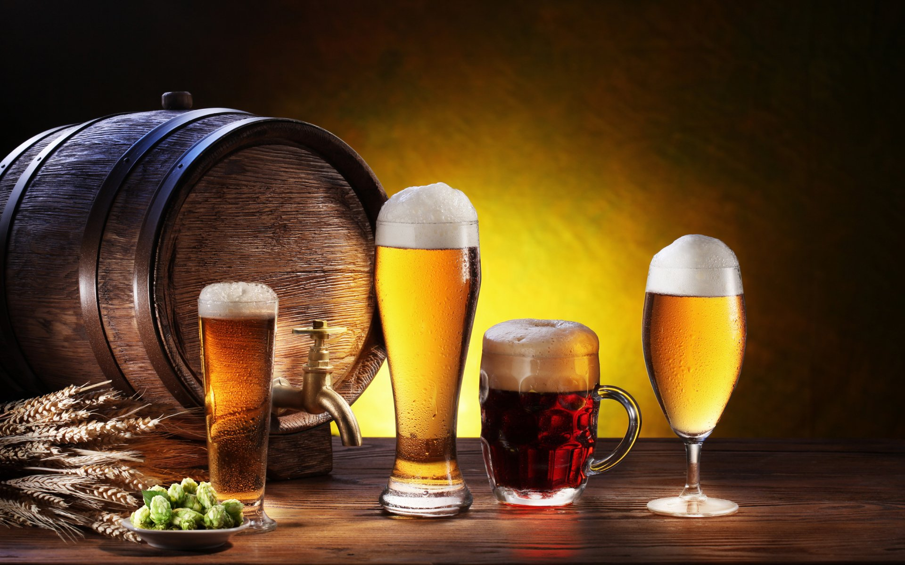

Beer

Beer is an alcoholic beverage. It is a product of the fermentation of wheat. There are many sorts of wheat, but the most famous
are the classic and dark lager.
Here’s the full recipe for my SMaSH ale, which I still brew frequently to experiment with new hops, yeast, malt, or brewing processes. I typically
use a two-row pale malt.
This recipe is designed with the novice brewer in mind, so I’ve skipped some key steps here, including water
chemistry adjustments and gravity readings. These can certainly help you make great beer, but a good understanding of techniques, process,
and gaining comfort with your brewing setup are much more important as you get started.
Bitterness will vary with the hops you select.
Consider starting with a variety that offers moderate alpha acids, such as Cascade, to establish a baseline. The next time you brew, you can
try a higher- or lower-alpha hop for more or less bitterness.
Ingredients
- 2.25 lb. (1.02 kg) milled base malt of your choice
- hops
- 0.5 oz. (14 g) any hop of your choice @ 60 min
- 0.25 oz. (7 g) the same hop @ 15 min
- 0.25 oz. (7 g) the same hop @ 0 min
- Any variety of yeast will work. I recommend starting with a dry yeast, as it is easy to measure the amount required for a 1-gallon batch.
Fermentis and Lallemand both make excellent dry yeasts in 11-gram packets, enough to brew a typical 5-gallon batch. Since we’re only brewing
a single gallon, we need one-fifth of that packet, or 2.2 grams. Having the jeweler’s scale here is helpful. Tightly package up any remaining
yeast and store in the refrigerator for future use.
- Water
- 1 gal. (3.8 L) for mashing
- 0.75 gal (2.8 L) for sparging
Steps
- Heat 1 gal. (3.8 L) water to 160°F (71°C). Add the milled malt and mash at 147-150°F (64-66°C) for 60 minutes. After 60 minutes, increase
the temperature of the mash to 170°F (77°C) and hold 10 minutes for mash out.
- While you’re mashing out, heat 0.75 gallon of water to 170°F (77°C) in a separate pot. Set a large mesh strainer over a third pot, 12 qt.
Cambro, or other large vessel and pour the mash through the strainer to separate the wort out from the spent grains. Slowly pour the sparge water
over the spent grain until you’ve collected about 5.5-6 qt. (5.2-5.7 L) of wort.
- Pour the wort into a pot and bring to a boil. Watch closely, as boil-overs can happen. Add the 60-minute hop addition once the wort comes to a
boil. With 15 minutes remaining, add the second hop addition, and at the end of the hour-long boil, add the final hop addition.
- Chill the wort down to the recommended yeast-pitching temperature by placing the entire pot into an ice bath in your sink. When the wort has
reached the appropriate temperature for yeast pitching, transfer it to a clean, sanitized fermentation vessel. Make sure that anything that
touches the wort from this point on is sanitized.
- Add the yeast to the wort, close the fermentation vessel, and shake it vigorously on and off for about 45 seconds to create it. Run a blow-off
tube from the fermenter to a jar or a small pot filled with sanitizer. This will prevent air from entering the soon-to-be beer but will all CO2
to escape.
- Within 12-24 hours there will be a decent amount of bubbling that will quiet down after about 3-4 days. Once this happens you can replace the
blow-off tube with an airlock. Two weeks later, fermentation will be complete and you can package your beer in bottles or a keg.
(source:
https://www.homebrewersassociation.org/homebrew-recipe/your-first-smash-ale/)